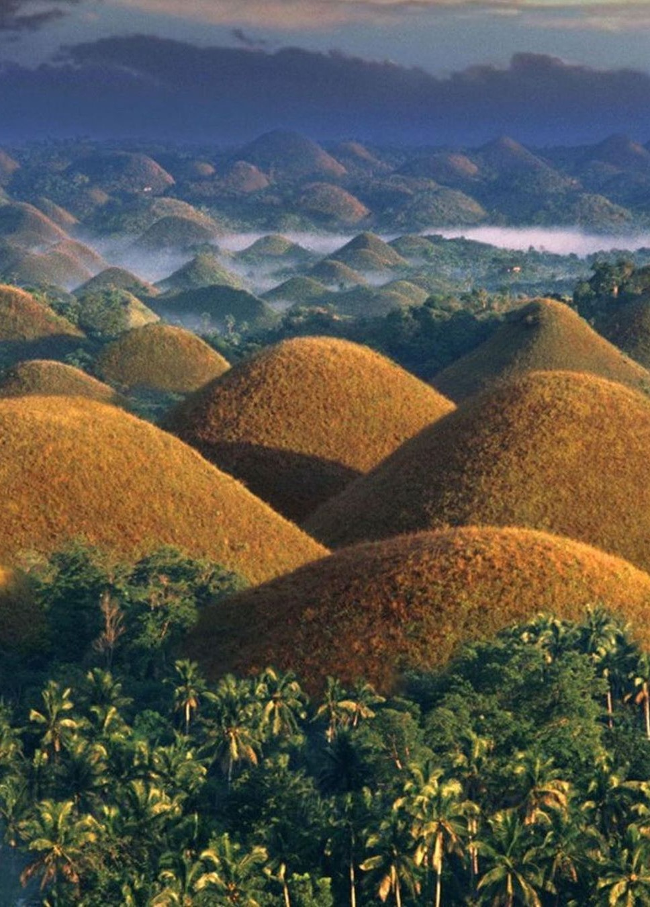

Region 7, also known as Central Visayas, is a region located in the central part of the Visayas island group in the Philippines. It is composed of four provinces: Bohol, Cebu, Negros Oriental, and Siquijor. Central Visayas is known for its rich cultural heritage, historical sites, pristine beaches, and diverse natural landscapes.
Bohol is an island province known for its stunning natural attractions and historical landmarks. It is famous for the Chocolate Hills, a unique geological formation of over 1,000 cone-shaped hills. Bohol is also home to the adorable Philippine tarsier, one of the world's smallest primates. Other attractions include the centuries-old Baclayon Church, Loboc River Cruise, and the white sandy beaches of Panglao Island.
Cebu is the hub of commerce, trade, and tourism in Central Visayas. It is a province with a rich history and vibrant urban lifestyle. Cebu City, the provincial capital, offers a mix of historical landmarks, such as Magellan's Cross and Fort San Pedro, and modern developments like shopping malls and entertainment centers. Cebu is also famous for its lively festivals, including the Sinulog Festival, which showcases colorful street dances and cultural performances.
Negros Oriental is a province known for its natural beauty and diverse ecosystems. It offers picturesque landscapes, including waterfalls, mountains, and marine sanctuaries. The province is home to Dumaguete City, often referred to as the "City of Gentle People," known for its laid-back atmosphere and educational institutions. Popular attractions include Apo Island, a renowned diving spot, and the stunning twin lakes of Balinsasayao and Danao.
Siquijor is an enchanting island province known for its mystical charm and natural wonders. It is often associated with traditional healing practices and folklore. Siquijor offers pristine beaches, coral reefs, and waterfalls, such as Cambugahay Falls. The island is also known for its centuries-old churches and the mystical Balete Tree, believed to be inhabited by supernatural beings.
Central Visayas is a region that seamlessly blends historical richness, natural beauty, and warm hospitality. Its diverse attractions cater to a wide range of interests, from adventure seekers and history buffs to beach lovers and cultural enthusiasts. With its vibrant festivals, stunning landscapes, and fascinating heritage, Central Visayas invites visitors to immerse themselves in the unique charm of the region and create unforgettable memories.